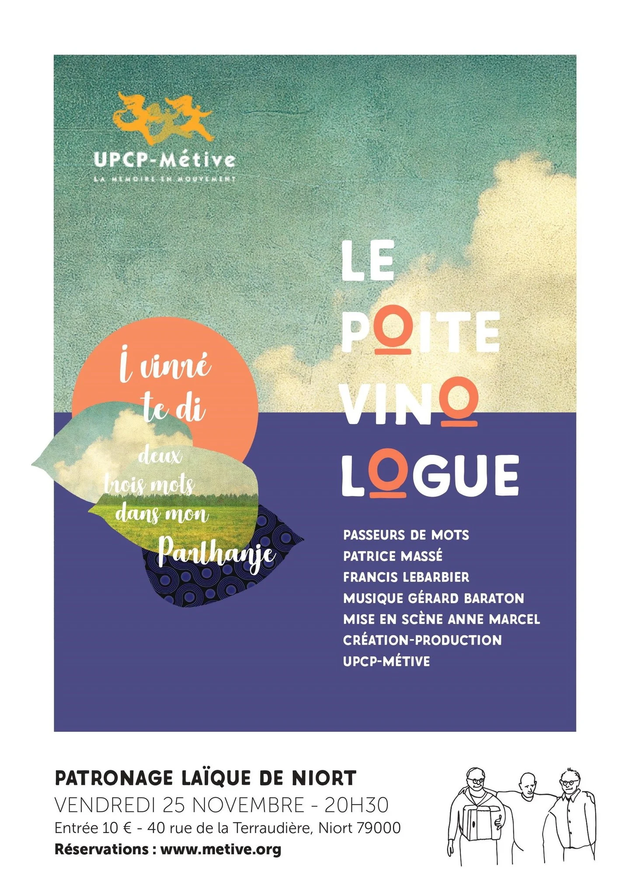
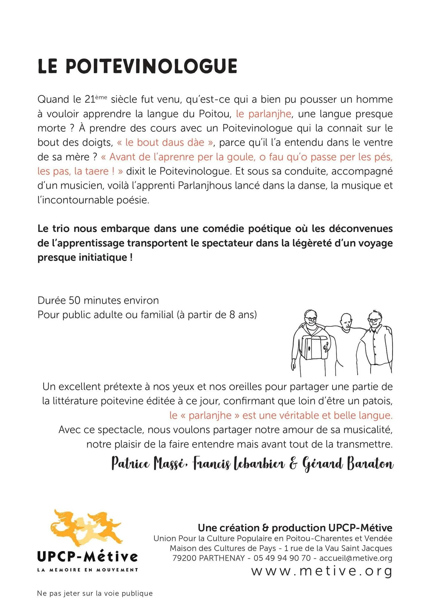

Annonce culturelle
Le Poitevinologue. Une rencontre avec le parlanjhe
Date indiquée par Facebook · 24 novembre 2022
Repères éditoriaux
La publication présente le spectacle et son point de départ, la transmission du parlanjhe, langue du Poitou.
Texte conservé avec la publication
Le Poitevinologue
Quand le 21ème siècle fut venu, qu’est-ce qui a bien pu pousser un homme à vouloir apprendre la langue du Poitou, le parlanjhe, une langue presque morte ? À prendre des cours avec un Poitevinologue qui la connait sur le bout des doigts, « le bout daus dàe », parce qu’il l’a entendu dans le ventre de sa mère ? « Avant de l’aprenre per la goule, o fau qu’o passe per les pés, les pas, la taere ! » dixit le Poitevinologue. Et sous sa conduite, accompagné
d’un musicien, voilà l’apprenti Parlanjhous lancé dans la danse, la musique et l’incontournable poésie.
AU PATRONAGE LAÏQUE DE NIORT, 40 rue de la Terraudière
VENDREDI 25 NOVEMBRE - 20H30


Sources
Archive rouge · export Facebook · AR-0002-FB-01809
À lire aussi · Pass culture, non à la punition collective ! · Le lien d’origine